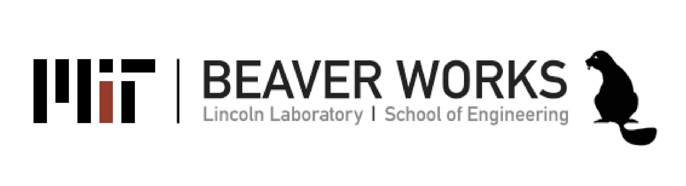
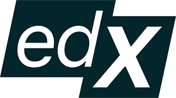
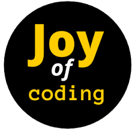
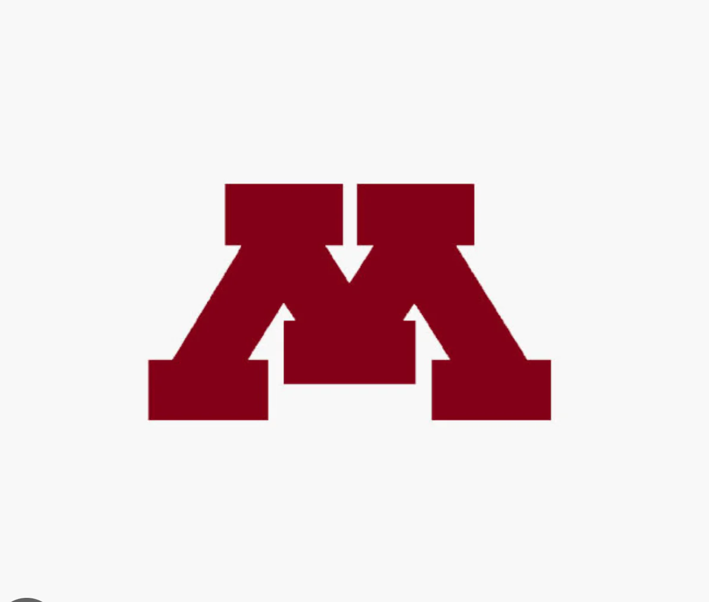
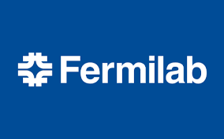
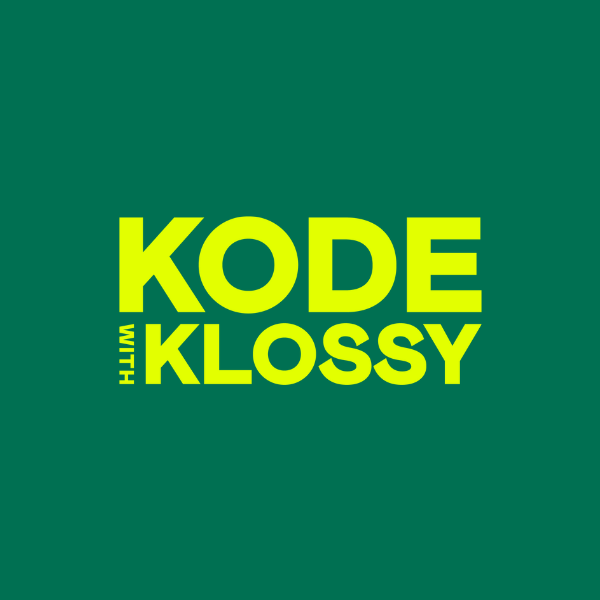
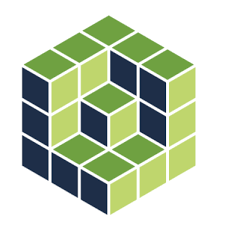
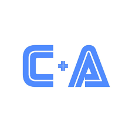
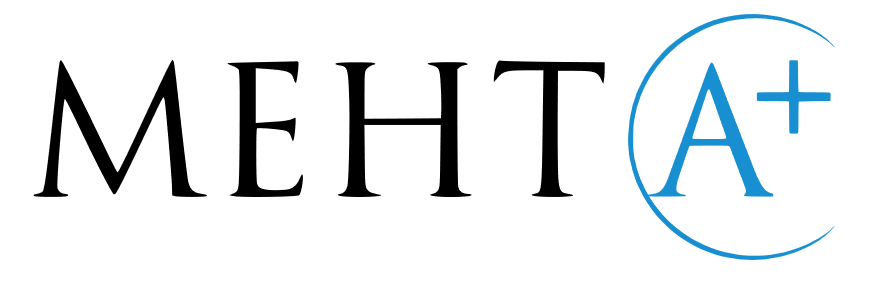
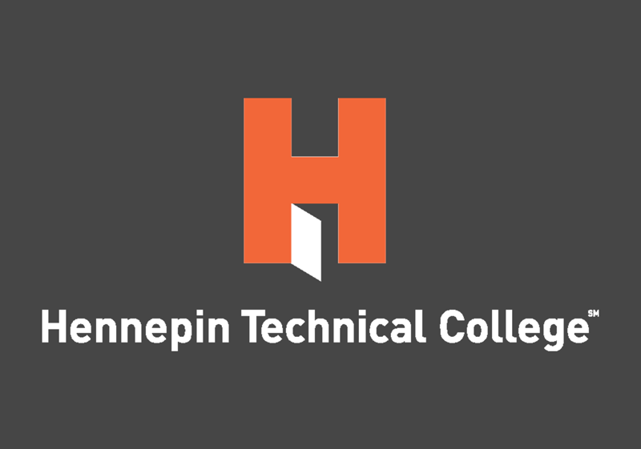

Research & Technical Projects
Deep Learning for Medical Image Diagnostics
July 2025 – July 2026Lead Developer — UMN Data Science Initiative / Independent | Python, PyTorch, Torchvision, Optuna
- Built a 4-layer PyTorch CNN from scratch and benchmarked against DenseNet-121, EfficientNetV2-S (82.4% val accuracy), ResNet-50, and Swin-Tiny under 5-fold CV; used Optuna parameter tuning across learning rates, batch sizes, and weight decay.
- Addressed class imbalance with Focal Loss; evaluated models on PR-AUC (0.752), F1-score, Recall, and Brier score calibration (0.15), using Grad-CAM to visualize model attention on pulmonary opacities.
CampQuest: AI-Powered Enrichment Discovery Platform
June 2025 – PresentLead Developer | Python, Supabase/SQL, Llama 3
- Prototyped an AI-powered web scraper using DuckDuckGo, Beautiful Soup, and Llama 3 to extract and standardize 1,200+ high school summer-program listings (scalable to 5,000+).
- Highlighted in a University of Minnesota College of Science & Engineering press release: https://z.umn.edu/CampQuest.
- Now designing Supabase (PostgreSQL) backend with custom indexing for multi-attribute filtering and distance-based search queries using the Haversine formula on ZIP code coordinates.
UCSC Python and Research (PYaR) & ReComBio
Spring 2026Student Researcher — Virtual | R, Python, Anaconda, Jupyter Notebooks
- Analyzed Andromeda (M31) stellar disk kinematics and satellite bombardment history from Hubble PHAT spectra at PYaR.
- Conducted hierarchical clustering of SARS-CoV-2 mutations and performed differential expression modeling in R at ReComBio.
Summer Research Experience
Stanford AIMI High School Summer Research Internship
Stanford, CA (Virtual) | June 2026Summer Research Intern — 1st Place Research Competition (Perfect Methodology Score)
- Awarded 1st Place (7 teams) with perfect methodology score from five AIMI faculty judges for PneumonAI pneumonia classifier; led interpretability and uncertainty quantification.
- Designed multimodal DenseNet-121 with Albumentations, metadata fusion and two-stage training; ablation studies contributed to top model (Swin-Tiny AUC 0.862) and multimodal validation accuracy gains (from approximately 85% → 90-93%).
- Implemented Grad-CAM visualizations to identify failure modes (textual artifacts, view-position labels); evaluated Bayesian CNN with Monte Carlo Dropout.
MIT Jameel Clinic AI & Health Summer Bootcamp
Cambridge, MA (In-Person) | July 2026Bootcamp Participant — 1st Place Hackathon Winner
- Led 6-person team to 1st Place (10 teams) on 25,000-record synthetic EHR for EpiPen prediction with temporal cutoff at Visit 2; evaluated Random Forest, Logistic Regression, XGBoost, and MLP via ROC-AUC, F1, Recall, and Brier score.
- Built end-to-end preprocessing pipeline including one-hot encoding, missing value imputation, and 80:20 train-val split with 5-fold CV; serialized production models with joblib for downstream inference; invited as 2027 TA.
Stanford iGEM Bioengineering Research Program (SiBRP)
Genetic Circuit | July 2026Lead Designer & Primary Author | Selected from 5,000+ Applicants
- Led design of a dual-input AND-gate genetic circuit in E. coli Nissle 1917 using split-T7 RNA polymerase to simultaneously detect nitric oxide (PnorV) and ROS (PsoxS) as early gut proxies for Parkinson's disease.
- Integrated an sfGFP fluorescent reporter module, designed auxotrophic biocontainment mechanisms, and evaluated potential clinical applications.
Stanford SCI³ Mini-Fellowship | Hamline Microscopy Camp
Stanford, CA (Virtual) / St. Paul, MN | June 2025 – July 2025Advanced Molecular Imaging Techniques & ESEM Experiments
- SCI³: Advanced molecular imaging for in vivo diagnostics.
- Hamline: Conducted ESEM analysis of tubular structures in hair samples from twins and compared with dog and cat hairs.
Research Scholar| UMN Basic Machine Leaning Camp | Python, Scikit-learn, Pandas, Matplotlib
- Machine learning model analyzing potential bias in police searches. Combines exploratory data analysis, fairness metrics, and model comparison to predict search likelihood.
Leadership & Outreach
CodeUnity
Co-Founder | Launched January 26, 2026 | MIT BWSI Official Sponsor of Hackathon
Co-founded nonprofit teaching free CS to underrepresented middle-school students; grew to 70+ students across 7 states and 3 countries with MIT BWSI sponsorship.
Mission: Making computer science accessible by teaching "Coding through Art & Apps" to middle schoolers.
Curriculum: TurtleLabs – combining creative visual output with foundational programming concepts & C.O.R.E teaching app building using Python.
CodeUnity bridges the gap between artistic expression and computational thinking, helping young students discover that coding can be both powerful and playful. Through interactive Python Turtle projects, students learn loops, functions, and problem-solving while creating visual artwork they're proud to share.
Enrichment Programs
- University of Minnesota Advanced AI/ML & Python Camps.
- Fermi National Accelerator Laboratory: Saturday Morning Physics.
- Kode With Klossy Data Science Camp.
- Columbia University SEM Program.
Extracurriculars
Competitive Programming & Mathematics
Active Competitor | Wayzata High School (2025 – Present)
- USACO Bronze Division: 2nd Place Intermediate at CodeHER International Competition (an USACO-styled coding competition with participants from 25+ countries in partnership with the Competitive Programming Initiative [CPI] and sponsored by NYU Tandon, Jane Street, and Non Trivial, 2026); Top 20% in the MIT Informatics Tournament Open Division. Varsity Math team competitor.
Performing Arts & Athletics
Percussionist, Dancer, & Competitor | Wayzata High School & Community (2021 – Present)
- Music & Dance: Percussion (Marimba, Snare Drum, Timpani) — GTCYS Concert Orchestra, MacPhail Rimshots: 6-member auditioned percussion ensemble, UMN High School Honor Band, 2026 MBDA State Honor Band. Kathak Dancer: Advanced-level Indian classical dance at Katha Dance Theatre (Lucknow Gharana, Guru Rita Mustaphi).
- Competitive Athletics: Figure Skating: 2000+ hours trained, competed in 117 events with 82 top-three finishes, 4x ISI World Gold, USFSA Pre-Gold skater, Junior Company member American Ice Theatre (AIT); USA Fencing Nationals Qualifier.
Humanities & Creative Writing
Iowa Young Writers' Studio & Varsity Speech Competitor | Online / Wayzata High School (2025 – 2026)
- Selected and attended Iowa Young Writers' Studio online fiction writing program. Drafting a novel, The Threads of Diocian. Two Scholastic Silver Keys. Creative Expression Speech finalist in 4 competitions.
Technical Skills
| Programming Languages: | Python, Java, C++, Wolfram (Mathematica), R |
| Frameworks & Libraries: | NumPy, Pandas, Matplotlib, Scikit-learn, BeautifulSoup, Albumentations, Tkinter, Flask, PyTorch, Torchvision, OpenCV |
| Databases: | MySQL, Supabase, PostgreSQL |
| Platforms: | VSCode, Jupyter, Replit, GitHub, Google Colab, Kali Linux |
| Web Technologies: | HTML, CSS, JavaScript |
| Tools: | Tableau, Git, Bash, Pixlr, LaTeX, Canva |
GitHub
Explore my open-source work across data science, AI, and software engineering.
ColoScreen Repository
Detailing the workflow, image capture and synthetic image generation using Stable Diffusion (Juggernaut XL)/ LoRA training in ComfyUI and Albumentations.
Machine Learning Repository
AI/ML notebooks using scikit-learn and PyTorch. Covers data preprocessing, model evaluation, visualization, and interpretation.
Java Coding Repository
Collection of Java programs, algorithms, and USACO prep problems demonstrating OOP, data structures, and algorithmic practice.
Python Coding Repository
Foundational Python exercises and projects — scripts, games, and learning notebooks showcasing growing technical fluency.
GitHub Profile & Stats
ColoScreen Repository


Machine Learning Repository


Python Coding Repository


Java Coding Repository


Certificates & Badges

MIT BWSI Yes! You can do Computational Problem Solving
MIT BWSI Girls Who Can Learn Applied Engineering, AI & Future Technologies

EdX- Harvard University CS50's Introduction to Programming with Python

University of Michigan — Joy of Coding

University of Minnesota — Advanced AI Camp

Fermi National Accelerator Laboratory
AlphaStar Intermediate Java

Kode With Klossy — Data Science
Wolfram Summer Program
UMN - Minnesota Robotics Institute
Affiliations

AoPS
MIT BWSI
University of Minnesota
Kode With Klossy
Wolfram

cyberarts.io
edX CS50P
Fermi National Accelerator Laboratory

Mehta+

Hennepin Technical College
Contact
📧 Email: saanvi.research@gmail.com
💻 GitHub: github.com/SalmaLilad